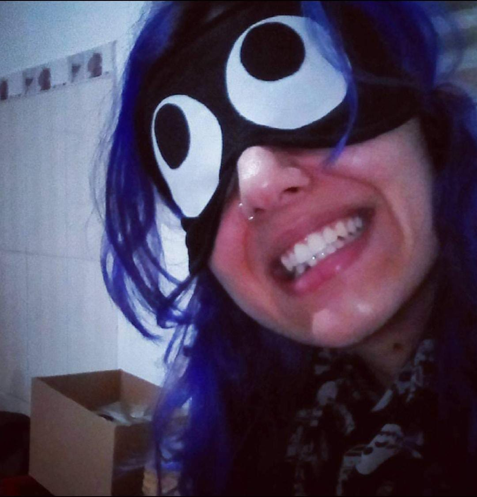
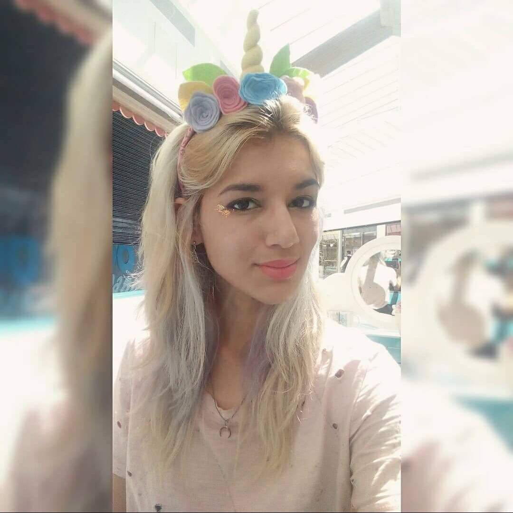
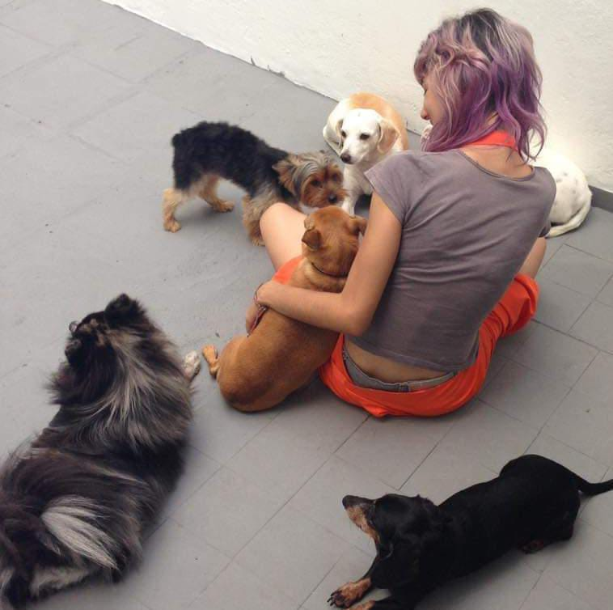

Nesta página você vai saber mais sobre mim
Cada item do menu acima te levará para uma das seções que dizem um pouco mais sobre a Lia.



Fotos de momentos aleatórios
Cada item do menu acima te levará para uma das seções que dizem um pouco mais sobre a Lia.
Fotos de momentos aleatórios